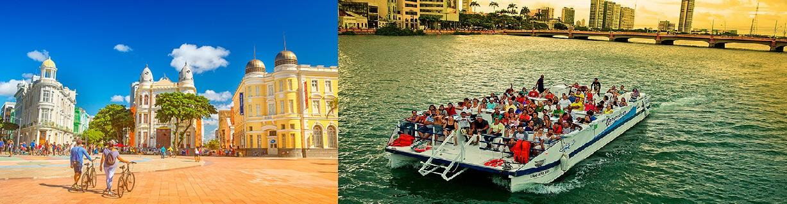
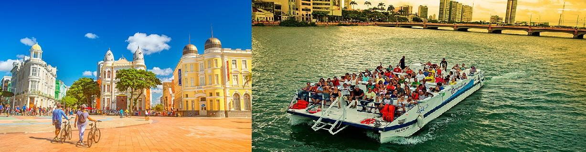

Sobre o Marco Zero
O Marco Zero de Recife é um dos pontos turísticos mais importantes da cidade. Localizado no coração da Praça Rio Branco, ele marca o centro geográfico de Recife. É a partir desse ponto que todas as distâncias rodoviárias de Recife são calculadas. Além disso, o local é cercado por diversas construções históricas e culturais, fazendo dele um local de grande importância tanto para os moradores quanto para os turistas.


 
